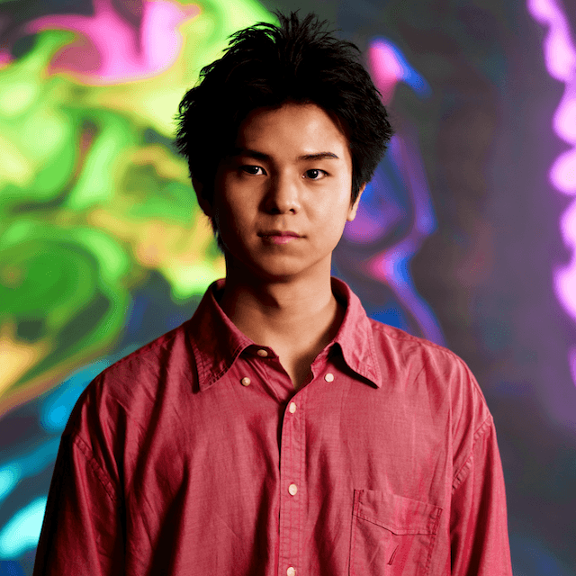

名古屋大学 河口研究室 修士1年
モバイル・ユビキタスコンピューティング

名古屋大学大学院 工学研究科 情報・通信工学専攻の河口研究室に所属しています。人に優しいユビキタス情報環境の実現を目指し、モバイル・ユビキタスコンピューティングの研究に取り組んでいます。
日常環境におけるシームレスな接続とコンテキストアウェアシステム。
スマートスペースのための環境センシング技術とIoTプラットフォーム。
モバイル環境向けのネットワーク技術とソフトウェアプラットフォーム。
JST CREST Internet of Realities 第3回シンポジウム
JST CREST「第3回 Internet of Realities シンポジウム ―紡ぎ、繋ぐ、リアリティの未来―」にてポスター発表を行いました。
愛知県日間賀島で開催された第117回MBL研究発表会に参加し、研究発表を行いました。
365y株式会社主催「第1回 全日本大学『外貨取引』選手権大会」にて敢闘賞を受賞しました。
椙山女学園大学にて開催された「インクルーシブ・アプリ 学生ハッカソン」にて最優秀賞を受賞しました。「AI予測補完キーボード」を開発しました。
第116回MBL・第87回UBI・第44回CDS・第33回ASD合同研究発表会に参加しました
富山県民会館で開催されたMBL・UBI・CDS・ASD合同研究発表会に参加しました。
東京で開催された地図・位置情報関連の合同展示会「ジオ展2025」に参加しました。
佐々葵です。名古屋大学大学院 修士1年として、河口研究室でユビキタス・モバイルコンピューティングの研究に取り組んでいます。